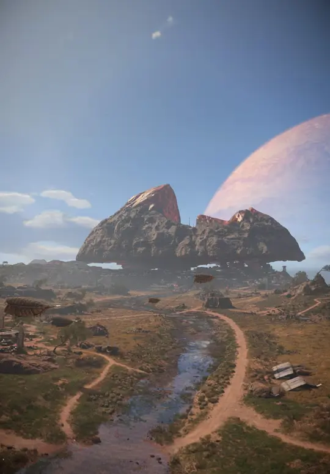
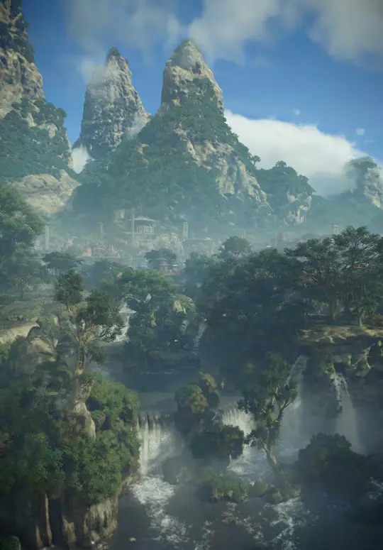
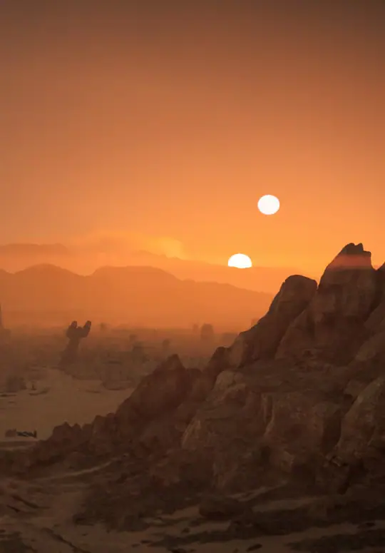
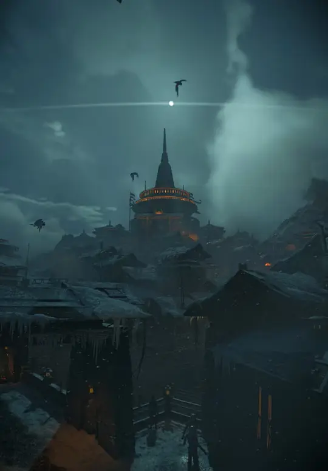
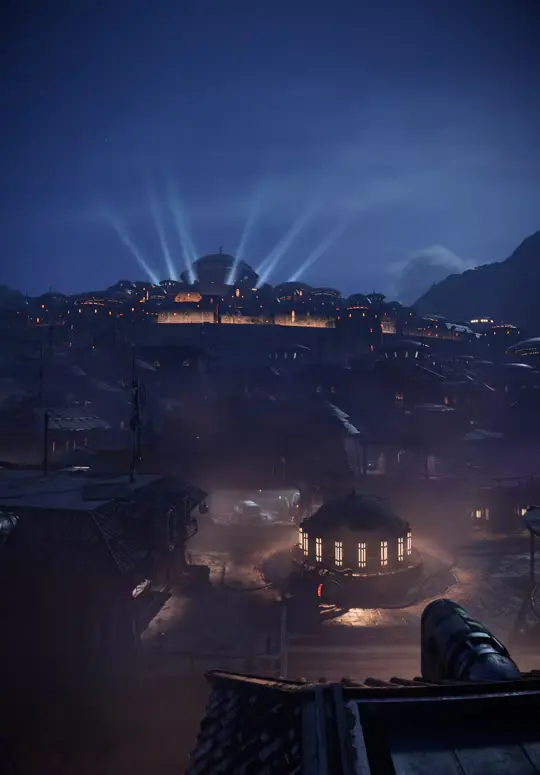

Toshara
Una luna moldeada por fuertes vientos y hogar de la bulliciosa ciudad de Mirogana. Un territorio clave donde el Sindicato Pyke tiene un control asfixiante sobre los recursos locales.

Recorré los mundos del Borde Exterior: llanuras azotadas por el viento, densas junglas y ciudades subterráneas dominadas por los sindicatos.

Una luna moldeada por fuertes vientos y hogar de la bulliciosa ciudad de Mirogana. Un territorio clave donde el Sindicato Pyke tiene un control asfixiante sobre los recursos locales.

Un mundo húmedo repleto de fábricas de droides en desuso y ruinas antiguas. Sus cursos de agua y junglas son ideales para navegar en speeder eludiendo las patrullas imperiales.

El clásico planeta arenoso bajo el yugo indiscutido de Jabba the Hutt. Entre sus mares de dunas y cantinas como Mos Eisley, el peligro y las oportunidades van de la mano.

Una ciudad fortaleza helada y vigilada de cerca por el Imperio. Sus estrechos callejones oscuros albergan a contrabandistas, ladrones y las bases de operaciones del Clan Ashiga.

El planeta natal de Kay Vess y sede de la deslumbrante Canto Bight, la ciudad casino de la élite galáctica donde los criminales más ricos cierran acuerdos millonarios.